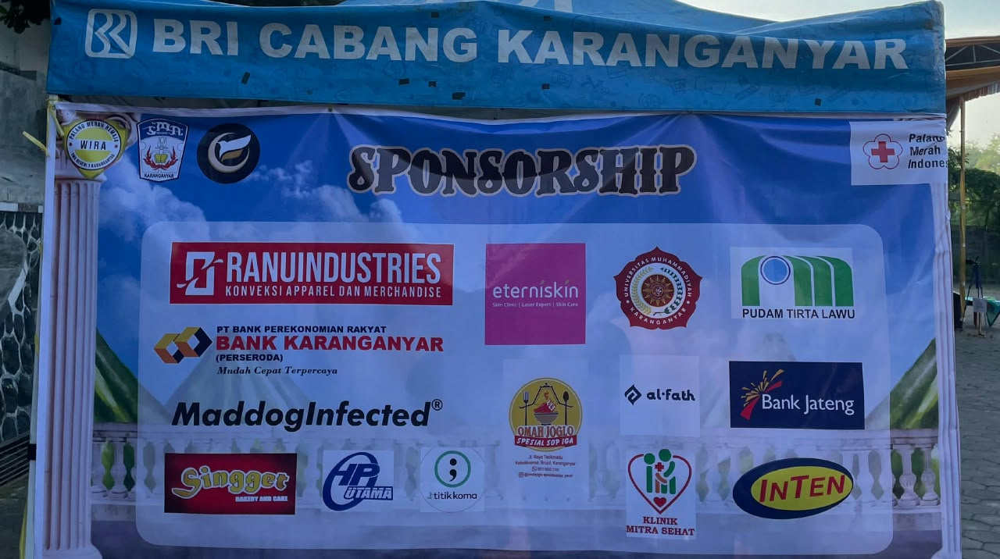
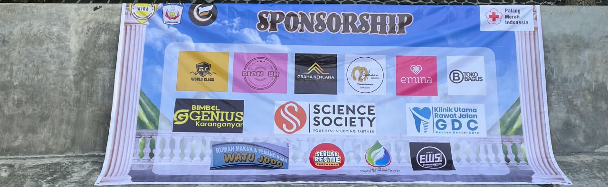

Tentang Saya
Saya sedang menempuh pendidikan di program studi Teknologi Rekayasa Elektro Universitas Gadjah Mada. Saya berasal dari Kota Karanganyar, Jawa Tengah, dan saat ini berdomisili di Yogyakarta. Saya memiliki ketertarikan yang besar pada bidang teknologi energi terbarukan dan ketenagalistrikan. Untuk membangun fondasi di bidang tersebut, semester ini saya sedang fokus mempelajari rangkaian listrik dasar, elektronika dasar, pengukuran listrik, serta pemrograman dasar. Melalui bekal ilmu ini, saya ingin berkontribusi dalam mempercepat transisi energi bersih di Indonesia.
Pendidikan
Universitas Gadjah Mada
Sekolah Vokasi
Departemen Teknik Elektro dan Informatika
Teknologi Rekayasa Elektro
2026 - 2030
SMA Negeri 1 Karanganyar
Ilmu Pengetahuan Alam dan Ekonomi (Kurikulum Merdeka)
2023 - 2026
Skill / Kemampuan
Hard Skill
Soft Skill
Pengalaman Organisasi dan Kepanitiaan

Penanggung Jawab (PIC) LCC Madya | Frosity#7
Mengoordinasikan panitia penyelenggara untuk kompetisi kuis tingkat sekolah menengah pertama, dan memastikan keberhasilan acara tersebut yang diikuti oleh 20 tim dari wilayah Keresidenan Surakarta, serta enyusun rencana untuk kategori kompetisi dan mengoordinasikan pembagian tugas di antara anggota tim secara efektif.


Staf Sponsor| Frosity#7
Berhasil memperoleh pendanaan dari 26 sponsor bisnis lokal serta mendorong penjualan merchandise hingga melampaui target awal, sehingga tujuan keuangan acara tersebut dapat tercapai.
Divisi Pendidikan dan Pengembangan | PMR WIRA SMAN 1 Karanganyar
Menyelenggarakan sesi pelatihan pertolongan pertama secara rutin bagi lebih dari 50 anggota PMR Wira dan merancang program pelatihan mingguan untuk meningkatkan keterampilan praktis para anggota secara efektif.
Pengalaman Administrasi & Kesekretariatan
Berpengalaman sebagai Sekretaris dalam berbagai kepanitiaan tingkat SMA, yaitu Diklatsar Organisasi, Perwira Peduli, dan program kerja lainnya. Serta di perkuliahan pernah menjadi sekretaris di program kerta Action Plan. Bertanggung jawab penuh atas manajemen administrasi harian, mulai dari penyusunan proposal, pengelolaan surat-menyurat resmi, hingga pembuatan Laporan Pertanggungjawaban (LPJ). Serta mahir dalam menyusun notulensi rapat yang akurat.
Proyek
-
Menyusunan Administrasi Dokumen
Menyusun proposal resmi, laporan pertanggungjawaban, daftar hadir, dan surat-surat perizinan yang diperlukan pada program kerja organisasi dengan menggunakan Microsoft Word.
-
Rekapitulasi Data
Mengelola dan mengurutkan nilai dalam suatu perlombaan, serta membuat tabel dan grafik pada tugas sekolah menggunakan Microsoft Excel.
-
Desain Presentasi dan Poster
Merancang poster kreatif dan materi presentasi (PPT) menggunakan Canva.
-
Membuat vidio
Memotong dan mengedit vidio dengan transisi dasar menggunakan CapCut.
Kontak
Email: chitaovita@mail.ugm.ac.id
LinkedIn: LinkedIn Chita Ovita
Instagram: @ovitachita